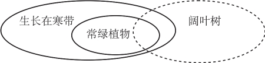
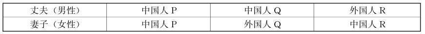
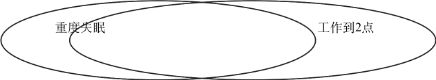
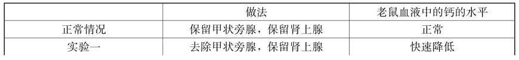

1.答案： B
题干为一个省略的三段论，注意本题是要反驳题干结论。负命题最能反驳，题干结论“阔叶树都不生长在寒带地区”的负命题是“有的阔叶树生长在寒带”。补充省略前提后的推理过程如下：
题干前提：有些阔叶树是常绿植物；
补充B项：常绿植物都生长在寒带地区；
得出结论：有的阔叶树生长在寒带。
因此就否定了题干所述的“阔叶树都不生长在寒带地区”这一结论。

2.答案： A
题干断定：第一，某些生活方式（抽烟、饮酒和运动）会影响胆固醇含量;
第二，胆固醇含量越高，患心脏病的风险也就越大。
从而可以看出，某些生活方式的改变会影响一个人患心脏病的风险，因此，Ⅰ项成立。
Ⅱ项不一定为真，题干只是说胆固醇含量越高，患心脏病的风险也就越大；但其否命题并不成立，即并不可必然得出：如果一个人的血液中的胆固醇含量不高，那么他患致命的心脏病的风险也不高。
Ⅲ项超出了题干断定的范围，不一定为真。
3.答案： E
题目陈述：地面雷达所拍下的流星最近距离为220万英里。但最近的流星照片格斯泊拉是在1万英里远的距离被拍摄到的。由此可必然得到结论：格斯泊拉的照片不是由地面雷达拍摄下的，所以E项正确。
4.答案： D
根据题干的条件，一个电炉，如果其加热的温度超出了温度旋钮的最高读数，则说明当温度达到恒温器的温度旋钮所设定的读数时，加热器并未自动关闭，即恒温器出现了故障；同时也说明当温度超出温度旋钮的最高读数时，加热器并未自动关闭，即安全器出现了故障。也就是说，一个电炉，如果其加热的温度超出了温度旋钮的最高读数，则它的恒温器和安全器一定都出现了故障。因此， D项作为题干的结论成立。因为D项成立，所以E项不成立。
A项显然不成立。例如在加热器不工作的情况下，恒温器和安全器即使都出现故障，电炉的温度也不会超出温度旋钮的最高读数。
B项不成立。因为一个电炉，如果其加热的温度超出了温度旋钮的设定读数但加热器未关闭，只能说明恒温器出现故障，不能说明安全器出现故障。
5.答案： B
题干断定：
（1）粮食价格稳定→蔬菜价格稳定
（2）﹁食用油价格稳定→﹁蔬菜价格稳定
由此得出：粮食价格稳定→食用油价格稳定
补充B项：食用油价格稳定→肉类食品价格不会上涨
从而推出：粮食价格稳定→肉类食品价格不会上涨
这与老李的断定（粮食价格保持稳定，但是肉类食品价格将上涨）完全相反。
因此， B项有力地质疑了老李的观点。
6.答案： E
题干是个省略三段论，补充省略前提后构成有效的三段论推理：
题干前提一：所有物质实体都是可见的。
题干前提二：任何可见的东西都没有神秘感。
推出结论：所有物质实体都没有神秘感。
补充E项：精神世界具有神秘感。
得出结论：精神世界不是物质实体。
A项补充进题干论证：所有物质实体都是可见的，而任何可见的东西都没有神秘感，精神世界是不可见的，因此，精神世界不是物质实体。这样，第1、3、4句话构成一个标准的三段论，能够合理推出结论，但是第2句话（任何可见的东西都没有神秘感）的条件就显得多余，因此，不如E项合适。
7.答案： C
题干和选项C的结构都是：如果非p，那么q；非p，所以q。
选项A的结构是：如果非p，那么q；q，所以非p。
选项B的结构是：如果非p，那么q；p，所以非q。
选项D的结构是：如果p，那么q；p，所以q。
选项E的结构是：要么p，要么q；非p，所以q。
8.答案： A
前提：中药的成分都是天然的。
假设：所有天然的东西都是安全的。
结论：中药是安全的。
因此，反驳上面论证的假设就必须说明，有些天然的东西是不安全的。
除A项外，其余选项都反驳了上面论证的假设。
9.答案： D
主持人的断定：一面是奇数→另一面是元音字母
其负命题为：一面是奇数而另一面不是元音字母
5为奇数， A为元音字母，翻动5和b，即第二张和第四张。
翻动第二张，如果另一面不是元音字母，可验证主持人的断定错误。
翻动第四张，如果背面为奇数，可以验证主持人的断定错误。
若翻动第一张，由于一面已不是奇数了，不能推翻主持人的断定。
若翻动第三张，由于一面已是元音字母了，不能推翻主持人的断定。
10.答案： A
根据题意，可列出如下不等式关系：
（1）甲+乙=丙+丁
（2）甲+丁>乙+丙
（3）乙>甲+丙
在不等式（2）的两边，分别减去等式（1）的两边，得：丁-乙>乙-丁，即推出：
（4）丁>乙
由（1）和（2）相加，得：甲+乙+甲+丁>丙+丁+乙+丙，即推出：
（5）甲>丙
再由（3）得：
（6）乙>甲
综合（4）（5）（6）得：丁>乙>甲>丙
11.答案： D
由于 ﹁（P∧Q）=﹁P∨﹁Q=P→﹁Q
按照本题问题要求，做如下推理：
并非“所有奖牌获得者进行了尿样化验，没有发现兴奋剂使用者”
=或者有的奖牌获得者没有化检尿样，或者在奖牌获得者中发现了兴奋剂使用者
=如果对所有的奖牌获得者进行了尿样化验，则一定发现了兴奋剂使用者
因此，Ⅰ和Ⅲ项正确。答案为D。
12.答案： B
由题干，可知以下推理关系：
①1→2∧﹁5
②2∨5→﹁4
③﹁3↔4
联立以上条件，已知开1，则
由①可得： 1→2∧﹁5
由②可得： 2→﹁4
由③可得：﹁4→3
因此，同时要打开的阀门是2号阀和3号阀， B正确。
13.答案： B
根据尚左数的定义，在8、9、7、6、4、5、3、2这列数字中，显然可看出：
8不是尚左数，因为其右边的9比其大。
9不是尚左数，因为其左边的8比其小。
7是尚左数，因为其左边的数字都比其大，且其右边的数字都比其小。
6是尚左数，因为其左边的数字都比其大，且其右边的数字都比其小。
4不是尚左数，因为其右边的5比其大。
5不是尚左数，因为其左边的4比其小。
3是尚左数，因为其左边的数字都比其大，且其右边的数字都比其小。
2是尚左数，因为其左边的数字都比其大，且其右边无数字。
因此， B项为正确答案。
14.答案： B
因为只有一个是真的，分析如下：
如果Ⅰ真，那么Ⅲ也真，与题意矛盾。所以，Ⅰ项为假，显卡没坏。
如果Ⅳ真，那么Ⅲ也真，与题意矛盾。所以，Ⅳ项为假，主板没坏。
既然主板和显卡都没坏，所以，Ⅲ项也为假。
15.答案： E
题干断定：大嘴鲈鱼→鲦鱼∧浮藻
有鲦鱼出现和长有浮藻是大嘴鲈鱼出现的必要条件，由此推不出：（河中）长有浮藻是鲦鱼出现的必要条件。因此，选Ⅰ不能由题干推出。
据题干断定的条件关系，由漠亚河中有大嘴鲈鱼，可推出漠亚河中既有浮藻，又有鲦鱼；但由漠亚河中没有大嘴鲈鱼，不能推出漠亚河中既没有浮藻，又发现不了鲦鱼。因此，选项Ⅱ不能从题干推出。
根据题干推理，鲦鱼和浮藻的关系是得不到的，选项Ⅲ显然不能从题干推出。
16.答案： A
题干断定吸毒和酗酒这些出格行为易导致抑郁，又断定抑郁会使有不良行为的孩子更加行为出格。由此可必然推出，行为出格的孩子容易抑郁，进而加重他们的出格行为。因此， A项正确。其余选项都不能从题干必然推出。
17.答案： B
题干断定了四个条件：
（1）在微波炉清洁剂中加入漂白剂，会释放出氯气；
（2）在浴盆清洁剂中加入漂白剂，会释放出氯气；
（3）在排烟机清洁剂中加入漂白剂，没有释放出任何气体；
（4）一种未知类型的清洁剂，加入漂白剂后，没有释放出氯气。
由（1）和（4），可推出该清洁剂不是微波炉清洁剂;
由（2）和（4），可推出该清洁剂不是浴盆清洁剂。
因此，由题干可推出：该清洁剂既不是微波炉清洁剂，也不是浴盆清洁剂。这正是复选项Ⅱ所断定的。其余复选项均不一定为真。
18.答案： D
令： P=某大学对全体新生进行了体检；Q=没有发现乙肝患者。
则题干的意思就是P∧Q
题干陈述为假，也就是﹁P∨﹁Q
即等价于：或者有的新生没有体检，或者在新生中发现了乙肝患者。因此，选项Ⅰ正确。
选项Ⅱ的逻辑意义是：﹁P∧﹁Q，与选项Ⅰ不一致，显然不一定真。
选项Ⅲ一定是真的，在﹁P∨﹁Q成立的情况下，那么如果P成立，﹁Q就一定成立。
19.答案： C
题干断定：
（1） 甲能查杀所有已知病毒
（2） ﹁乙防御一号病毒→﹁丙查杀一号病毒
（3） 丙防御一号病毒←查杀已知的所有病毒
（4） 启动甲←启动丙
C项，如果启动丙程序，由（4）可推出，启动丙→启动甲；又由（1）可知，甲能查杀已知的所有病毒，即可以查杀已知的一号病毒；再由（3）知，丙可以防御一号病毒，故得出：能防御并查杀一号病毒。因此，该项为正确答案。
其余选项都不能必然得出。比如E项，启动了甲程序，就可以查杀已知的所有病毒，并不意味着能查杀所有病毒，因为未知病毒是否能查杀是不知道的。
20.答案： E
心理学理论：要想快乐→有亲密的人际关系。
要说明这个理论不成立，就要找其反例，即找上述推理的负命题，为：
快乐∧没有亲密的人际关系
由选项E，最伟大的画家们是快乐的;加上题干所说，伟大的画家并没有亲密的人际关系;因此，心理学理论的负命题成立，即这种心理学理论一定是错误的。可见， E项是题干推理所必须假设的。
21.答案： B
李医生：癌症←接受化疗
赵经理：癌症∧﹁接受化疗
赵经理的质疑对李医生的陈述并没有反驳作用，实际上，赵经理的质疑是下列命题的否命题：
癌症→接受化疗
即赵经理把李医生的话误解为：所有得了癌症的人都得接受化疗。
22.答案： A
题干推理为：有些被公众认为是坏的行为往往有好的效果。因此，有些被公众认为是坏的行为其实是好的行为。
在题干的推理中，要从前提得出结论，必须假设：好效果是好行为的充分条件。但题干仅断定：好效果是好行为的必要条件。
因此，题干推理的错误在于不当地假设：如果a是b的必要条件，则a也是b的充分条件。
23.答案： C
根据题意，三人中，一个是主犯，一个是从犯，一个与案件无关。而只有与案件无关的人说了实话，因此，这三条证词中至少有一条是与案件无关的人讲的真话。
由于证词中提到的名字都不是说话者本人，因此，这三条证词不可能只出自一人之口，所以，这三条证词中不可能都是与案件无关的人讲的。
下面先假设这三条证词中只有一条是与案件无关的人讲的真话，那么三句话就是一真两假。
假设（1）是真话，（2）、（3）是假话。由（1）真，可知甲不是主犯，则甲只能是从犯或与案件无关;而由（2）、（3）假，可知，乙是从犯，丙与案件无关。这就存在着内在的矛盾。
假设（2）是真话，（1）、（3）是假话。由（2）真，可知，乙不是从犯，则乙只能是主犯或与案件无关;而由（1）、（3）假，可知，甲是主犯，丙与案件无关。这同样存在着内在的矛盾。
假设（3）是真话，（1）、（2）是假话，则三人全是罪犯，也存在着内在的矛盾。
因此，这说明三条证词中只能有两条是与案件无关的人讲的真话。
假设（1）是假话，（2）、（3）是真话，则（2）、（3）应出自与案件无关的人甲之口，但（1）是假话，又推出甲是主犯，这就存在了矛盾。
假设（2）是假话，（1）、（3）是真话，则（1）、（3）应出自与案件无关的人乙之口，但（2）是假话，又推出乙是从犯，这仍然存在矛盾。
假设（3）是假话，（1）、（2）是真话，则（1）、（2）应出自与案件无关的人丙之口，由此推知丙是与案件无关的人，甲是从犯，乙是主犯。
24.答案： D
丈夫或妻子至少有一个是中国人的夫妻有三种情况，列表如下：

题干可表示为（P+ R）-（P+ Q）= 2；即R- Q= 2
Ⅰ可表示为R= 2；这从题干推不出来。
Ⅱ可表示为R> Q；这可以从题干必然推出。
25.答案： C
题干中做出了三个断定：
第一，工厂对由植物生成的燃料的耗用产生二氧化碳；
第二，绿色植被特别是森林吸收二氧化碳；
第三，如果二氧化碳超量产生，则会出现全球气候的温室效应。
从上述三个断定可以得出结论：如果工厂产生的二氧化碳超过了一定的限度，并且没有足够的绿色植被特别是森林吸收二氧化碳，那么二氧化碳就会超量，就会不可避免地使全球出现温室效应。这正是C项所断定的。
其余各项均不能从题干推出。比如E项，如果出现了温室效应，不一定是植被破坏或工厂耗用燃料造成的，可能是由别的因素引起的（比如火山爆发等）。
26.答案： D
题干根据服用阿司匹林的人比不服用的人得心血管疾病的可能性小，得到解释性的结论，服用阿司匹林减小患心脏病的可能性。
要使其论证具有说服力，其必须假设除了服用阿司匹林之外没有别的因素影响推论。D项说明在服用阿司匹林之前，参与者的健康并不比其他人的健康更好，排除了由于本身身体好而少得心血管疾病的可能性，所以是正确选项。其他选项均起不到假设作用。
27.答案： E
题干调查发现喝咖啡的人比不喝咖啡的人胆固醇含量高。由于胆固醇是增加心脏病危险的主要因素，由此得出结论：咖啡增长心脏病的危险。
E项说明，喝咖啡的人同时吃了高胆固醇的食物，这意味着喝咖啡的人胆固醇含量高不一定是喝咖啡造成的，这就有力地削弱了题干结论。
28.答案： B
题干根据研究所显示的使用移动电话与患神经胶质癌存在统计相关，从而推断两者因果相关，由此认为，手机的电磁辐射可能威胁人体健康。这是题干中尽量少用手机通话这一专家建议的依据。
B项表明，即使不使用移动电话通话，人也会受到超过手机所产生辐射强度的电磁辐射，因此，上述两个现象很可能仅仅是统计相关，并不存在因果关系，这就有力地削弱了专家建议的依据。
其余选项对专家的建议也有所削弱，但力度不足。
29.答案： B
题干根据赛发特百货商场中有阳光射入的地方比只有人工照明的地方销售量要高的事实，得出结论：商店内射入的阳光可增加销售额。
B项说明在商场夜间开放时，天窗下面的各部门无阳光射入，那么其销售额并不比其他部门高，没有这个原因就没有这个结果，由此强化了商店内射入的阳光和销售额之间的因果关系，这就有效地支持了题干结论，从而有力地支持了结论，所以为正确答案。
E项易误选，也能起到支持作用，但只能说明商店天窗下的销售量高的原因是因为天窗这个因素，但是不是阳光原因还不好说（也许是空气更新鲜呢），因此，支持力度不足。
其余选项不能支持题干论述，比如， A项说明在阴天时候天窗下面部分的采光方式，与题干论证无关；C项对题干论证有所削弱; D项说明商厦的建筑形式与风格，与题干论证无关。
30.答案： C
题干认为根据氨基酸的分解可有效鉴别年代的长度。然后进一步陈述，由于氨基酸的分解在寒冷的地区较慢，所以，这种技术可用于考古遗址的年代鉴别。
这是一则用科学归纳法做出的论证，从中可见，温度的变化影响氨基酸的分解速度。由此可推出：在温度变化大的地区氨基酸的分解速度也不断变化，那么这种技术就可能在年代鉴别上出现较大的偏差。因此， C项为正确答案。
31.答案： A
题干论述：给不同年龄的老鼠注射某种蛋白造成的反应，跟老鼠受到威胁时形成的反应类似。
A项表明，因为老鼠受到威胁时候体内产生的物质，跟被注射的物质相似，所以导致了相似的反应，符合题干论述，因此为正确答案。
选项B、C、D为明显无关项。E项不能被题干支持，因为非常小的老鼠在遇到突然威胁的时候也能产生相应的反应，所以很可能有应付常见遭遇的激素。
32.答案： C
该粒子物理学家的意思是，过去玻色子都不是美国发现的，所以，属于玻色子的希格斯粒子不可能在美国被发现。
如果C项为真，即：如果x在过去一段时间内一直未做成y，则x不可能做成y。那么，该粒子物理学家的观点就成立。
A项的思路与题干中的推理相反;补充B项不能使题干推理成立; D项与题干推理的相关性太弱。
33.答案： A
题干中的杀虫剂的特点是能区分鸟类和昆虫，但不能区分昆虫中的益虫与害虫，因此，在杀死害虫时虽然高效，但同时也杀死了益虫。
A项中的战斗机的特点是能区分客机和战斗机，但不能区分战斗机中的敌机与友机，因此，攻击敌机虽然有效，但也可能误击友机。这和题干中杀虫剂的特点类似。
题干和A项特点是，能区分某一大类，但在具体小类中不能分清敌我。
其余各项产品都不具有类似于题干中杀虫剂的上述特点。
34.答案： A
如果一个人摄入的胆固醇及脂肪和他的血清胆固醇指标无条件成正比，那么，如果中国的人均胆固醇和脂肪摄入量是欧洲的1/2，则其人均血清胆固醇指标也等于欧洲人的1/2。但题干断定，以欧洲人均胆固醇和脂肪摄入量的1/4为界限，在该界限内，上述二者成正比;超过这个界限，则不成正比。因此，可以得出结论：中国的人均胆固醇和脂肪摄入量是欧洲的1/2，但中国的人均血清胆固醇指标不一定等于欧洲人的1/2，即A项成立。
35.答案： A
题干论述：两个系统都能查出所有的产品缺陷，但都有3%的错误率将合格产品检测为有缺陷。所以应该使用两套系统以降低错误率。
A项为题干论证所必需的假设，否则，如果X系统误测的无缺陷的产品与Y系统误测的完全一样，意味着使用两套系统和一套系统的结果是一样的，使用两套系统就没什么必要了。其余选项均不是假设。
36.答案： A
题干论证有误，根据90%的重度失眠者经常工作到凌晨2点，张宏经常工作到凌晨2点，是得不出“张宏很可能是一位重度失眠者”这一结论的。
如果A项为真，即经常工作到凌晨2点的大学教师有90%是重度失眠者;那么，由于张宏经常工作到凌晨2点，从而可以合乎逻辑地得出结论：张宏有90%可能是一位重度失眠者。
“90%的重度失眠者经常工作到凌晨2点”得不出“10%的人经常工作到凌晨2点而没有患重度失眠症”，因此， B项不对。
题干并没有否认，除了经常工作到凌晨2点以外，还有其他导致大学教师重度失眠症的原因。因此， C项不对。
如果D项为真，即经常工作到凌晨2点是人们患重度失眠症的唯一原因，那么，由于张宏经常工作到凌晨2点，从而可以得出结论：张宏必然是一位重度失眠者。所以， D项也不对。

37.答案： B
题干需要解释的现象是：咖啡并不含糖，也不分解为糖，但咖啡却可使人体内的血糖浓度上升。
B项表明，饮用咖啡会间接导致人体把储存的葡萄糖释放到血液中。这揭示了咖啡是如何起作用的因果关系，有力地解释了题干现象，因此为正确答案。
这样形成的因果链条为：饮用咖啡增加人体的紧张程度人体把储存的葡萄糖释放到血液中
其余选项不能解释。比如， A项，喝咖啡只是一种习惯，起作用的还是饭中的食物，至多能说明饭后喝咖啡使血糖上升是食物的作用，不能说明咖啡能使血糖水平急剧上升。E项，符合题干所述的现象，但并没有解释题干为什么出现这个现象。
38.答案： C
题干断定：百灵鸟的数量下降不能归咎于居民的增多。
如果C项的断定为真，则说明清河界森林周边居民的增多，造成了丢弃的生活垃圾的增多;丢弃垃圾的增多，造成了森林中乌鹃的增多;森林中乌鹃的增多，造成了对百灵鸟繁衍的破坏，因而造成了清河界森林中百灵鸟数量的减少。因此，虽然森林的面积没有减少，但清河界周边居民的增多，确实是百灵鸟减少的一个原因。这就有力地削弱了题干的论证。
这样形成的因果链条为：居民增多生活垃圾增多乌鹃增多百灵鸟卵减少百灵鸟的数量下降。
39.答案： A
家长认为：学生视力下降是由于作业负担太重。
校长认为：学生视力下降和作业负担没有关系，视力下降的原因是做作业的姿势不正确。
选项A，作业负担重易使学生疲劳，而疲劳会使书写姿势不正确。这使得学生家长所指出的原因成为校长所指出的原因的深层次的原因，说明了学生视力下降还是由于作业负担太重所导致，这对校长的解释而言是很大的一个质疑。
这样形成的因果链条为：作业负担重学生疲劳书写姿势不正确视力下降
选项B是支持学生家长的，但不能有力地削弱校长。C项是无关项。选项D、E是支持校长的。
40.答案： E
题干根据研究发现， X牌香烟的Y成分可以抑制致鼻咽癌的EB病毒，得出结论，经常吸X牌香烟的人将减少鼻咽癌的风险。
如果“Y成分的作用可以被X牌香烟的Z成分中和”，这样， Y成分就不能抑制EB病毒了，那么，“经常吸X牌香烟的人将减少鼻咽癌的风险”的结论就不成立了。因此，E项有力地削弱了题干论证。
B项不能削弱题干。因为题干只断定Y成分有利于阻止正常的鼻咽部细胞转化为癌细胞，并没有断定Y成分有利于抑制或消除已经形成的癌细胞。
C项说明Y成分是有用的，前半句有支持作用;后半句说对免疫系统有负面作用，有削弱作用，但影响哪方面的免疫作用没说，因此，削弱力度不大。
41.答案： E
题干结论：儿童时代经常看到父母病痛的人，会使这个人在成年后更易于得这种病痛。
E项表明，是因为成年后生病才记起儿童时代父母的病痛，而并不是因为记得父母的病痛使得成年后才更易于得这种病痛，这就有力地削弱了题干论证，所以为正确答案。
其余选项均为无关项，比如， B项讨论父母在孩子长大后的病痛，跟题干论证无关。
42.答案： D
题干观点：精神压力是原因，长粉刺和多吃巧克力是这一原因产生的结果。显然， D项最为恰当地概括了题干的意思。
题干论述的目的就是确定精神压力与长粉刺和多吃巧克力的因果关系，因此， A不恰当。其余选项均不符合题干的意思。
43.答案： A
学者就鸽子走路时伸脖子现象做出的假设是，暂时静止的头部有利于鸽子获得稳定的视野，看清周围的食物。
A项表明，鸽子行走时如果不伸脖子，很难发现远处的食物。这与题干假设构成了差异法，从无因无果的角度有力地支持了题干假设。
E项是从共变的角度来支持，但是力度不如A。
44.答案： E
题干论述，青蛙的卵没有保护，青蛙数量的下降可能是由于紫外线照射增加导致。
E项表明，把青蛙的卵保护在沙子下的青蛙种群比不保护的青蛙种群数量下降得少，这意味着保护起来是有效的，有助于说明紫外线照射是青蛙数量下降的原因，因此为正确答案。
45.答案： C
题干观点：因为服用番茄红素胶囊的患者肿瘤缩小，所以番茄红素胶囊能使肿瘤缩小。
差异法推理可用增加对照组来支持。C项指出相似的没有服用番茄红素胶囊的患者肿瘤没有缩小，意味着使用胶囊很可能就是肿瘤减小的决定性因素，支持题干。
46.答案： B
题干论证：因为患心脏病的男性一般比没患心脏病的男性的睾丸激素水平低，所以高水平的睾丸激素不是男性心脏病发作的主要原因。
B项是题干论证必需的假设，否则如果患心脏病会显著降低男性患者的睾丸激素水平，暗示有可能是高水平的睾丸激素导致心脏病，而心脏病又导致睾丸激素水平下降，这就严重地削弱了题干论证。
其余选项均不是假设。其中， A项，讨论没有患病者的睾丸激素水平，与题干关系不大。C项，讨论其他荷尔蒙，与题干无关。D项，讨论其他原因，也与题干无关。E为明显无关选项。
47.答案： A
本题是使用差异法做出的论证，先行情况中的差异因素是“是否服用试验药物W素”，比较的现象是“寿命”，由于10年后每一组都有44位病人去世，从中得出结论：这种药物是无效的。
如果A项为真，则事实上，在上述死亡病人中，不服用试验药物W素的那一组的平均死亡年份比第一组早两年，则有利于说明差异因素（服用试验药物W素）是导致某种现象（寿命增加）产生的原因，这样，就说明服用治疗T的试验药物W素是有效的，有力地削弱上述论证，为正确答案。
对两组病人的考察，只能从患病并进行治疗开始，与平均寿命关系不大，因此， B不选。根据题意，每组只有1人活着，因此比较活着的人就没有什么意义了，所以C、D、E项均不予考虑。
48.答案： A
题干论证：有过敏食物就有偏头痛，没有过敏食物也有偏头痛，所以过敏食物不是偏头痛的原因。
A项表明，食物与偏头痛之间有滞后性，即隐含着说明即使停止吃过敏食物，前期的过敏食物仍然会带来偏头痛，而实际上现在的正常食物并没有引起偏头痛，意味着过敏食物仍然可能是偏头痛的原因。这就以另有他因的方式削弱了题干结论。
49.答案： A
根据题干所陈述的实验情况，可列表如下：

根据正常情况和实验一对比，可以推测，甲状旁腺的功能是能升高血液中的钙，也即科学家们假设甲状旁腺的功能是调节血液中的钙的水平。
根据实验一和实验二对比，可以推测，肾上腺的功能是能降低血液中的钙，选项A就表明了这一点，因此为正确答案。其余选项都不能起到解释作用。
50.答案： D
题干是个溯因推理，推理过程如下：
地质学主张的因果关系：陨石对地球的撞击生成了富含铱元素的尘埃云层，当尘埃落到地面后形成了富含铱元素的沉积岩。
事实上有果：一个含有异常丰富的铱元素的沉积岩层。
所以推出有因： 6000万年前陨石撞击地球生成了富含铱元素的尘埃云层。
在削弱用溯因推理做出的因果论证时，要注意“一果多因”这种情况。D项表明，6000万年前大规模的火山爆发形成了这个富含铱元素的尘埃云层，这就通过找其他原因的方法，对题干关于富含铱元素的沉积岩是陨石撞击地球的证据这一主张提出了有力的反击。